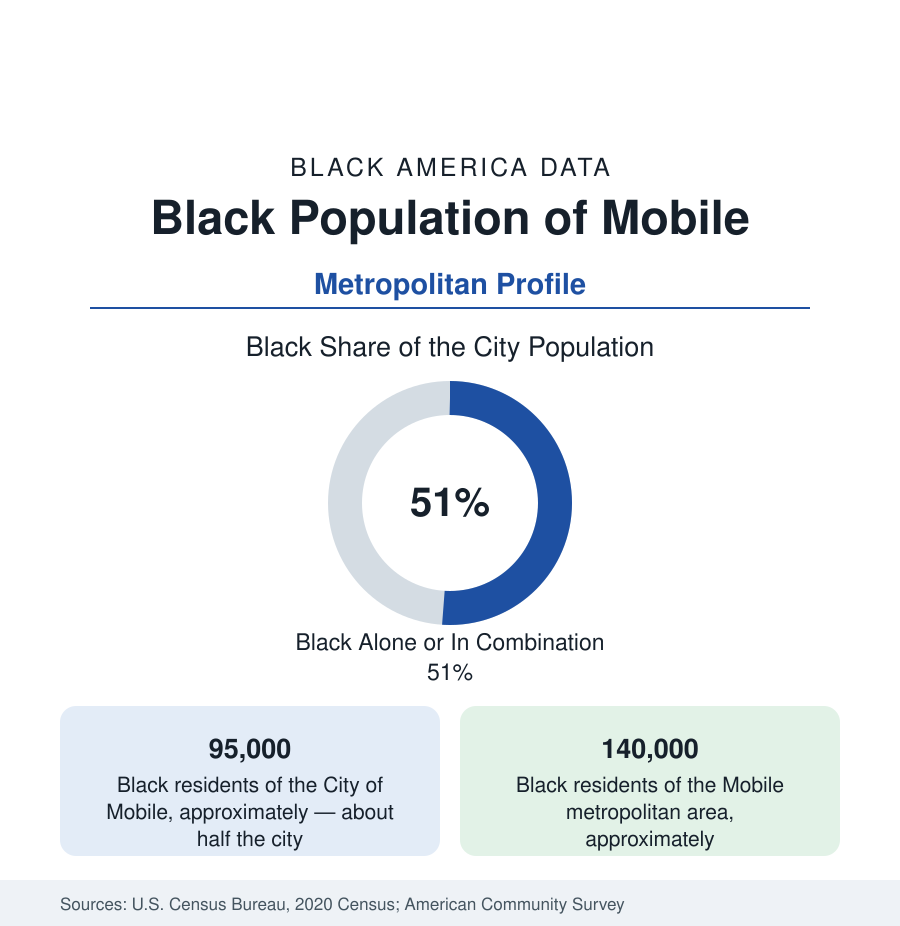

Black Cities
Black Mobile: Alabama's Port City and the Last American Slave Ship
Mobile holds about 95,000 Black residents in the city and 140,000 across the metro — nearly half the city, from Africatown to the shipping channel. The census profile.

Mobile holds about 95,000 Black residents within the city — Black alone or in combination, roughly half of its 187,000 people — and about 140,000 across the metropolitan area. Alabama's only seaport carries a singular entry in the national record: Africatown, the community founded by the survivors of the Clotilda — the last known slave ship to reach the United States, in 1860, half a century after the trade was banned — whose descendants still hold the ground their founders bought, in the city's northern industrial bend.
Africatown, Magazine Point, and Plateau
The community's geography begins at that bend: Africatown and Magazine Point and Plateau, where the 110 Clotilda survivors — brought illegally from West Africa, freed by emancipation five years later — saved, bought land, and built a self-governing African town on American soil (its story recovered in the archive: Zora Neale Hurston's interviews with Cudjo Lewis, the last survivor, published generations later as Barracoon; the ship's wreck located in the Mobile River in 2019). Around that founding ground the industrial north grew — the paper mills and chemical plants of the river corridor, whose emissions file and the community's environmental-justice organizing (the Africatown coalition's national standing in that movement) are the modern chapter of the same acres. The city's broader Black geography runs south and west from downtown: the Avenue (Martin Luther King Jr. Avenue, the historic commercial spine), the Bottom and Texas Hills districts, Toulminville and Trinity Gardens, Maysville and the Birdville neighborhood, and the midtown and west-Mobile subdivisions where the professional class settled — with Bishop State Community College (the HBCU-descended two-year college) and the Figures and Mostellar medical names in the institutional ledger.
Mardi Gras First, and the Port's Work
Mobile's entry in the celebration file precedes New Orleans': America's first Mardi Gras, whose Black parallel institution — the Mobile Area Mardi Gras Association, its king and queen, its balls and the Joe Cain and Colored Carnival traditions — is the community's own carnival state, documented in the local archive. The employment data run through the channel: the Port of Mobile (Alabama State Port Authority — coal, containers, and the steel and forest products of the river system) with its longshore and maritime workforce; Austal's shipyard (the Navy's littoral ships built on the riverfront's east bank, thousands of skilled trades jobs) and the maritime suppliers; Airbus's Mobile assembly line (the A320-family final assembly at Brookley, the aerospace tier); the University of South Alabama and its medical center (the city's academic-medical anchor, the region's Level I trauma center); and the chemical and paper corridor of the northern industrial belt. The indicators record the working port city's spread: incomes in the Southern band, homeownership in the west-side subdivisions, poverty concentrated in the northern and Avenue-adjacent tracts — and the shipyard and port expansions of the harbor-deepening era as the growth file.
The Movement and the Modern City
Mobile's movement file runs through the Neighborhood Organized Workers and John LeFlore's Non-Partisan Voters League — the disciplined, decades-long civic machine that litigated and organized the city's Black franchise through the Jim Crow century — to the modern political data: a city that elects its leadership from districts the voting cases drew, its Black council strength a standing fact, its school data (Mobile County's district — the state's largest — with majority-Black enrollment) carrying the education ledger. The cultural file adds the Hank Aaron house (the home-run king's Mobile childhood home, preserved at the stadium grounds) and the Order of Myths' counterpoint — a city whose Black heritage tourism (Africatown's visitor center, the Clotilda exhibition at the History Museum) has become a growth sector of its own in the estimates era.
Change and the Estimates
The estimates show the city proper holding near its count while the metro's growth runs to Baldwin County across the bay — Daphne, Fairhope, Spanish Fort, Foley booming as the Eastern Shore suburbs — diluting the metro's Black share even as the city's majority holds. The port's channel deepening and the container terminal's phases, Austal's expansions, and the downtown and Avenue corridor reinvestment plans are the current files; Africatown's land and environmental cases (the bridge routing — the I-10 Mobile River Bridge project's Africatown questions — prominent among them) keep the founding community at the center of the metro's infrastructure politics, exactly where its founders put it: in the path, and on the record.
Reading the Mobile Numbers
Mobile's 140,000 metro Black residents include the only community in America founded by the passengers of the last slave ship — people who crossed in 1860, bought their ground, and governed themselves, whose descendants hold the same acres beside the modern cranes. The data file that begins there needs no framing. It is the founding document, still being written.
More in Black Cities
Black Atlanta: Population, Distribution, and Growth of a Black Metropolis
Metro Atlanta holds more than two million Black residents — roughly one in three, second only to New York. The suburban distribution, migration history, and composition of Black Atlanta in the census data.
Black New York: The Largest Black Population in America
The New York metropolitan area holds about 3.4 million Black residents — more than any metro in the nation — and the city itself about two million. The census profile.
Black Washington: The District and the Metro
The Washington metro holds about 1.6 million Black residents, and the District itself — long a majority-Black city — now records a Black share near 41 percent. The census profile.
Source: U.S. Census Bureau, 2020 Census; American Community Survey; Population Estimates Program.